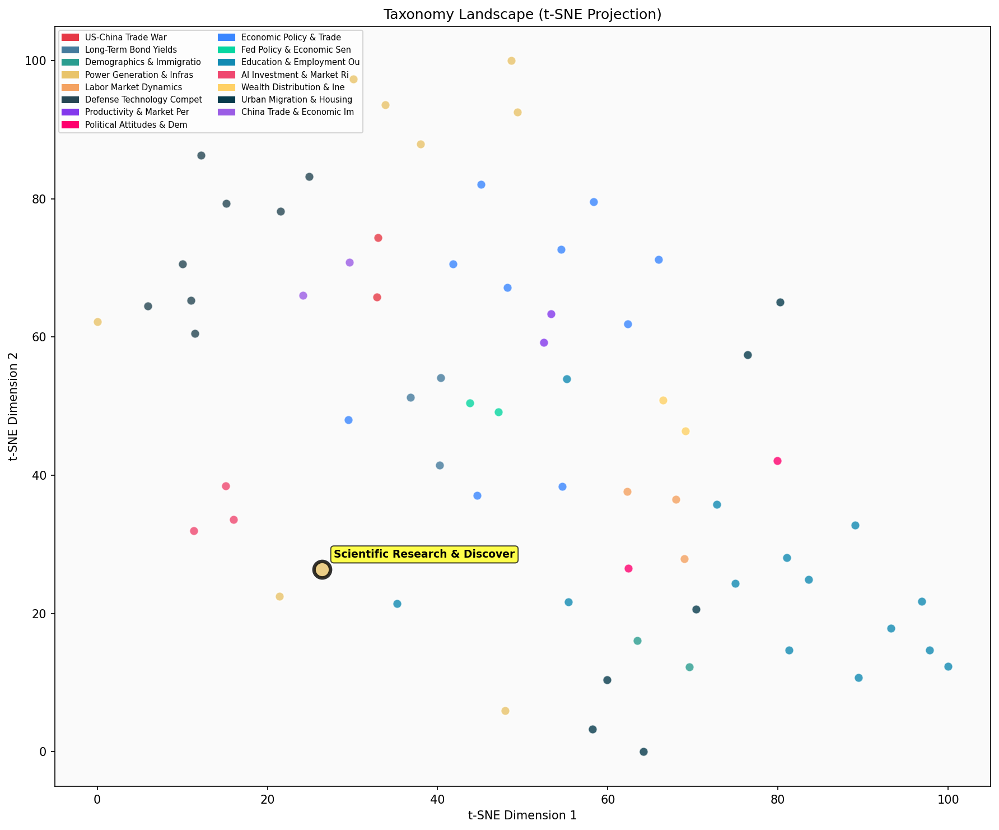

Description
This subcluster encompasses fundamental scientific breakthroughs across diverse research domains, from CRISPR gene editing and AI-driven protein design to cosmic ray physics and asteroid discoveries. Articles typically report on peer-reviewed research from leading institutions like MIT and Google DeepMind, featuring empirical findings, experimental results, and technological innovations. Unlike its sibling subclusters focusing on energy production metrics and infrastructure investment trends, this collection emphasizes basic science discoveries that may eventually influence energy technologies. Content spans biological systems research, space science, artificial intelligence applications in molecular biology, and particle physics, representing the foundational research pipeline that precedes commercial energy applications.
Similarity to All 70 Subclusters
Each cell represents a subcluster. Color intensity shows similarity (blue=low, red=high). Black line marks current subcluster position.
Relationship to Primary Clusters
Average similarity to each of the 15 primary clusters. Larger area = stronger relationship to that cluster.
Taxonomy Landscape
All 70 subclusters positioned by similarity (t-SNE). Current subcluster highlighted with label. Click to enlarge.
Network Connections
Current subcluster at center, connected to related subclusters. Line thickness = similarity strength.
Most Representative Articles
-
1. Cosmic rays at highest energies might be created by unknown particles, possibly under the influence
-
2. .@QuantaMagazine reports on a @Nature study that tracked the tempo of evolution across 68 species an
-
3. MIT chemists have developed a generative AI method to predict 3D genome structures in minutes rather
-
4. Earlier work by Ranga Dias, the researcher who claimed a breakthrough on room-temperature supercondu
-
5. The shape of space-time is in constant flux due to gravitational waves. The most likely cause is sup
Edge Cases (Boundary Articles)
-
1. A newly discovered asteroid, estimated at 130-330 ft. long, has a 2.3% chance of hitting Earth in 20This article is borderline because while it mentions asteroid discovery (fitting the "asteroid discoveries" aspect of the cluster), it focuses primarily on planetary defense and collision risk assessment rather than fundamental scientific breakthroughs or research discoveries. The content is more about space threat monitoring and mitigation efforts, which aligns better with the practical/commercial space activities in the alternative cluster than with the research-focused nature of the assigned cluster.
-
2. Global growth slows amid supply disruptions + inflation; consumer spend resilient despite rate hikesThis article is borderline because it focuses entirely on macroeconomic indicators like inflation, labor markets, and business investment rather than scientific research or discovery breakthroughs. The content appears to be misclassified, as it deals with economic analysis rather than the fundamental scientific breakthroughs (like CRISPR, AI protein design, or cosmic discoveries) that define this cluster.
-
3. A treatment that inhibits the pro-inflammatory cytokine IL-11 extends the median lifespan of male miThis article is borderline because while it reports on a genuine scientific breakthrough (anti-aging treatment discovery), it focuses narrowly on a single medical finding rather than the broader scope of "fundamental scientific breakthroughs across diverse research domains" that characterizes the cluster. The treatment's specific focus on lifespan extension through cytokine inhibition lacks the interdisciplinary breadth seen in other cluster examples like CRISPR, AI protein design, and cosmic discoveries.
Original Dendrogram